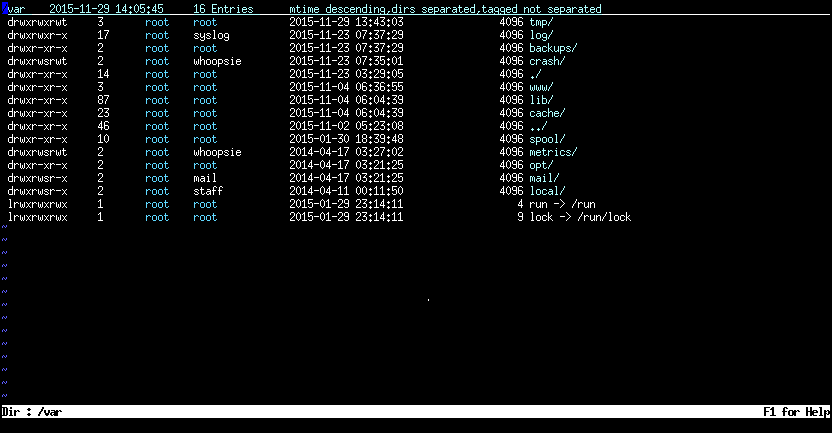

What LL does
LL provides a very quick filebrowser with a lot of nice features
How the directory listing is formatted is configurable in a wide variety of ways.
The default comes like this:

invoking LL
From your shell:
| LL # LL for current dir |
| LL dir # LL for given dir |
| LL file # LL for current dir, position on file |
| LL /path/to/file # LL for /path/to, position on file |
| find . -name '*.c' | L # LL for list of files |
|
From within vim:
| :LL " LL for current dir (as shown with :pwd) |
| :LL dir " LL for given dir |
| :LL file " LL for current dir (as shown with :pwd), position on file |
| :LL /path/to/file " LL for /path/to, position on file |
| :LLF pattern " LL for list of files produced by find |
| :LLG pattern " LL for list of files produced by grep |
| :LLO " LL for list of files produced by any external command |
| :L " LL for list of files provided in a vim-buffer |
|
|
There is a sample session that you can study by typing in vim
Linux users may try the fail-save start
Make sure you have a rather wide terminal (about 132 characters or more) open.
In your shell type
| LLfs |
| ~/strux/bin/LLfs # use this if you did not do the full Preparation |
LLfs is the "fail-save" version of LL. It should work no matter how your .vimrc is set up.
Later you might want to use LL (instead of LLfs) and have your own settings active.
The commands of LL
Details on how to use LL can be found in the (vim-) help.
For this type
You can have a peek into the
help
Pressing F1 in LL will also display an overview of all commands.
Colored filenames
Filenames are colored according to the same rules standard ls uses.
For this the syntax-files LL*.vim are provided within the zip-file.
vim must be compiled with +syntax (check with :ver).
Furthermore
should be in the .vimrc to enable this feature
The tru source of LL
Here's how LL is produced: